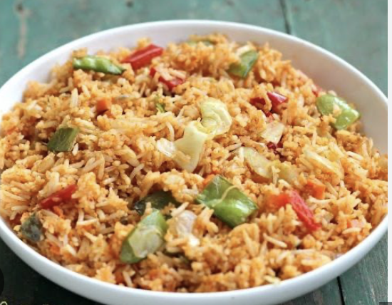

Garlic Chilly Fried Rice
Ingredients:
- Neutral Oil
- Ginger
- Garlic
- Cooked Rice
- Chopped Carrots
- Chopped Onion
- Soy Sauce
- Seasame Oil
- Garlic Chilli Oil
- Salt
- Pepper
- Green Onions *optional*
- Garlic Chips *optional*
Instructions
- On your stove set to low heat, add oil, garlic and ginger to your wok and saute until lightly browned
- Add chopped carrots and onions to the wok and continue to stir
- Add in cooked and cooled white jasmine rice. Turn the heat up the stove to medium heat, and combine the veggies and rice in the wok
- Add in Soy Sauce, Seasame Oil, and Chilli Oil. Estimate how much of the sauses to use based on the how brwn you like your fried rice
- Stir the fried rice and season with salt and pepper. Cook on medium heat for 2-3 minutes
- Serve hot and top with green onions and garlic chips
- Enjoy!

Back